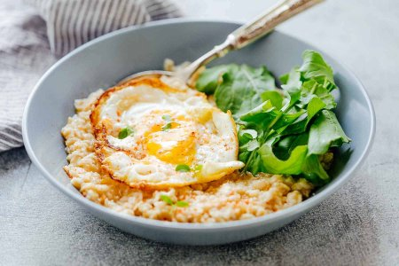

Savory Oats

Description
These savory oats are great healthy way to start your day.
If you have tried eating oats in the traditional sweet way
and do not enjoy them, then these are worth a shot.
Ever since I started eating oats this way I have been
able to enjoy them and eat them regularly.
Ingredients
- 1/2 cup oats
- 5/8 cup of water
- 1 large egg
- 1/4 cup shreaded cheese
- pint of salt
Directions
- Put oats and water in medium bowl
- Microwave oats and water for 1 minute on high
- Cook large egg in pan
- Add cheese to cooking egg
- Stir oats and microwave for 30 more seconds
- Place egg on top of oats
- Salt and enjoy